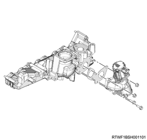
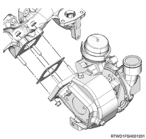
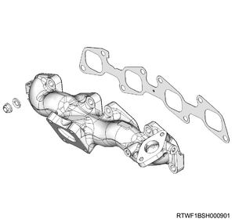
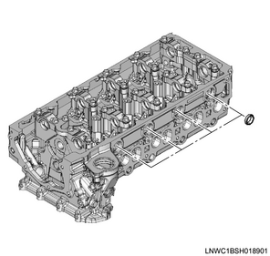

Cylinder head assembly disassembly (4JK1)
1. Rear engine hanger bracket removal
1. Remove special tool from the rear engine hanger bracket.
Note
- Remove the wire from the engine hanger and hoist, and remove the engine hanger.
2. Remove the rear engine hanger bracket from the cylinder head assembly.

2. Bracket removal
1. Remove the bracket from the cylinder head.

- Bracket
3. EGR valve removal
Note
- The following applies to models with EGR.
1. Remove the EGR valve from the EGR duct.

4. Inlet manifold removal
Note
- The following applies to models with an EGR.
1. Remove the inlet manifold from the cylinder head.
2. Remove the gasket from the inlet manifold.
3. Remove the EGR pipe adapter from the inlet manifold.
Note
- The following applies to models without EGR.
4. Remove the inlet manifold from the cylinder head.
5. Remove the gasket from the inlet manifold.
5. Turbocharger assembly removal
1. Remove the turbocharger from the exhaust manifold.

6. Exhaust manifold removal
1. Remove the exhaust manifold from the cylinder head.

7. Valve stem end cap removal
1. Remove the valve stem end cap from the split collar.
8. Split collar removal
1. Remove the split collar from the valve using special tool.
Note
- Using a valve spring compressor adapter and valve spring compressor, compress the valve spring and remove the split collar.

SST: 5-8840-2865-0 - valve spring compressor adaptor

SST: 5-8840-2546-0 - valve spring replacer

- Valve spring compressor adaptor
- Valve spring replacer
9. Spring upper seat removal
1. Remove the spring upper seat from the valve spring.
10. Valve spring removal
1. Remove the valve spring from the cylinder head.
Note
- Organize the removed valve springs in the order of the cylinder number.
11. Inlet valve removal
1. Remove the inlet valve from the cylinder head.
Note
- Organize the removed inlet valves according to the cylinders using tags, etc.
12. Exhaust valve removal
1. Remove the exhaust valve from the cylinder head.
Note
- Organize the removed exhaust valves according to the cylinders using tags, etc.

13. Valve stem oil seal removal
1. Remove the valve stem oil seal from the cylinder head using a pliers.
Caution
- Do not reuse the removed oil seal.
14. Spring lower seat removal
1. Remove the spring lower seat from the cylinder head.
15. Valve guide removal
1. Remove the valve guide from the cylinder head using special tool.
Note
- Use the valve guide remover and installer to push out the valve guide out from the lower side of the cylinder head.

SST: 5-8840-2816-0 - valve guide remover and installer
16. Oil seal removal
1. Remove the oil seal from the cylinder head.
